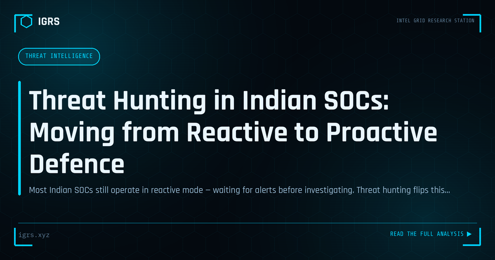

Threat Hunting in Indian SOCs: Moving from Reactive to Proactive Defence
| File No. | IGRS-023/2026 |
| Subject | Practical threat hunting methodology for security operations teams in Indian organizations |
| Category | Threat Intelligence |
| Author | Manuj Kumar Pandey |
| Published | 2026-04-29 |
| Reading time | 12 minutes |
Most Indian SOCs still operate in reactive mode — waiting for alerts before investigating. Threat hunting flips this. How to implement it with the tools and talent most Indian teams already have.
Threat Hunting: Proactive Defence
Threat hunting represents a fundamental shift in cybersecurity — from waiting for alerts to proactively searching for threats that have evaded existing defences. For Security Operations Centres (SOCs) in India, threat hunting is becoming an essential capability as adversaries grow more sophisticated at bypassing automated detection. This guide explains threat hunting methodology and how to build the capability in an Indian SOC context.
What Is Threat Hunting?
Threat hunting is the proactive, hypothesis-driven search through networks and systems for threats that automated tools have missed. Rather than responding to alerts, hunters assume a breach may have occurred and actively look for evidence of it. This proactive stance catches advanced threats — particularly those using legitimate tools and living-off-the-land techniques — that signature-based detection overlooks.
The Threat Hunting Process
- Hypothesis: Form a hypothesis based on threat intelligence or attacker techniques
- Data collection: Gather relevant data from SIEM, EDR, and logs
- Investigation: Search for indicators and anomalies supporting the hypothesis
- Analysis: Examine findings, confirm or refute the hypothesis
- Response: Escalate confirmed threats to incident response
- Improvement: Convert findings into new detection rules
Hypothesis-Driven Hunting
Effective hunting starts with a strong hypothesis. These are often derived from the MITRE ATT&CK framework — for example, "an adversary may be using Kerberoasting to escalate privileges" — or from threat intelligence about active campaigns. The hypothesis focuses the hunt, defining what data to examine and what patterns to seek, transforming an open-ended search into a structured investigation.
The MITRE ATT&CK Framework
MITRE ATT&CK is the foundation of modern threat hunting. It catalogues adversary tactics, techniques, and procedures (TTPs) observed in real attacks, organised by stages from initial access to impact. Hunters use ATT&CK to generate hypotheses, understand what evidence each technique leaves, and ensure comprehensive coverage of how adversaries operate. Mapping detection coverage against ATT&CK reveals blind spots.
Data Sources for Hunting
| Source | Hunting Value |
|---|---|
| EDR telemetry | Process, file, registry, network activity on endpoints |
| SIEM logs | Aggregated logs across the environment |
| Network traffic | C2, lateral movement, exfiltration |
| DNS logs | Malicious domain lookups, tunnelling |
| Authentication logs | Anomalous logons, privilege use |
Common Hunting Techniques
Practical hunts target known adversary behaviours: searching for anomalous PowerShell execution, unusual parent-child process relationships, suspicious scheduled tasks and services, abnormal authentication patterns (impossible travel, off-hours admin logons), beaconing network traffic, and signs of credential dumping. Each hunt looks for the subtle traces that automated alerting did not flag.
Tools for Threat Hunting
Threat hunters use a combination of tools: SIEM platforms for log search and correlation, EDR for endpoint telemetry and response, network analysis tools for traffic inspection, and frameworks like Velociraptor for endpoint hunting at scale. Scripting skills (PowerShell, Python) enable custom analysis. Threat intelligence platforms provide the context that drives hypotheses.
Skills a Threat Hunter Needs
Effective threat hunting demands a blend of skills: deep knowledge of attacker TTPs and the MITRE ATT&CK framework, proficiency in log analysis and query languages, understanding of normal network and system behaviour to spot anomalies, scripting ability for custom analysis, and the analytical mindset to pursue subtle leads. Hunters must think like attackers to find them.
Building a Hunting Capability in an Indian SOC
Establishing threat hunting in an Indian SOC involves ensuring adequate data collection and retention (aligned with CERT-In's 180-day requirement), developing hunting hypotheses from threat intelligence relevant to Indian targets, training analysts in ATT&CK and hunting techniques, allocating dedicated hunting time rather than only reactive alert handling, and feeding hunt findings back into detection engineering. Maturity grows as hunts become more systematic and findings continually improve automated detection.
From Hunting to Improved Defence
The ultimate value of threat hunting is not just catching current threats but continuously improving defences. Every hunt — whether it finds a threat or not — generates insight: new detection rules, identified blind spots, better understanding of the environment. This virtuous cycle, where proactive hunting strengthens automated defence, is what makes threat hunting a force multiplier for any SOC. For Indian organisations facing increasingly sophisticated adversaries, building this proactive capability is becoming essential to staying ahead of threats rather than merely reacting to them.